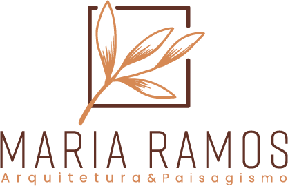

Sobre mim
Olá eu sou a Maria Ramos, Arquiteta e Urbanista formada pela Universidade de Sorocaba - UNISO em 2018 e pós-graduando em paisagismo pela UNESP Registro, trabalhei como arquiteta em alguns escritórios de arquitetura em Sorocaba e São Paulo.
Participo de projetos sociais para construção de moradia para pessoas de baixa renda em algumas ONGs em São Paulo.
Desde criança quando morava no sertão de Pernambuco construía minhas casinhas de barro na qual deu origem a cor da minha logomarca. Desde então venho correndo atrás do meu sonho sempre buscando o novo sem perder a simplicidade.
Serviços
Projeto de interiores
Consultoria de interiores
Projeto de paisagismo
Projeto arquitetônico residencial